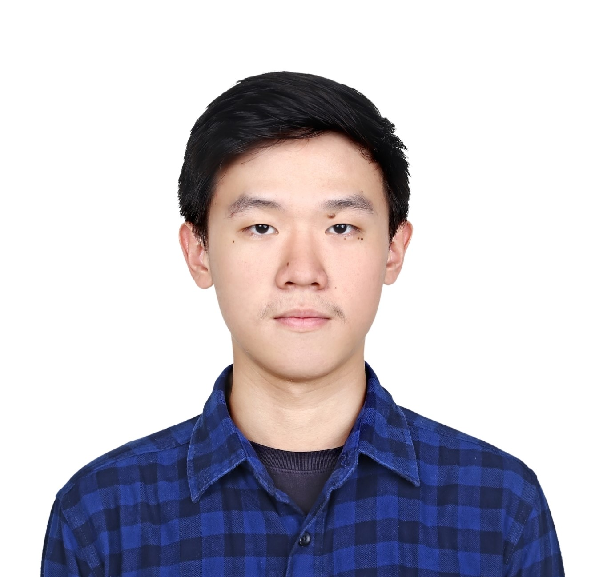

ABOUT ME
"Focus on the process not just hoping for the outcomes"
DoB
: August 24 1998
Nationality
: Indonesia
Phone
: (+62)89620373370
Email
: bryankarunac@gmail.com
Location
: South Tangerang, Indonesia
SKILLS
Technical
Python
Javascript
Tableau
HTML/CSS
SQL
Languages
Bahasa Indonesia
English
MORE INFO
linkedin.com/in/bryankchandra
kaggle.com/bryankaruna
github.com/bryankaruna
youracclaim.com/bryankchandra
BRYAN
KARUNACHANDRA
Education
SMAK Penabur Gading Serpong
2013-2016
Course Net IT Course
2016
BINUS University | Computer Science | Database Specialization
2016-2020
iOS Foundation Program
2017
Digital Talent Scholarship - Fresh Graduate Academy - Data Scientist
2020
General Interest
💡
Data Science
Web Development
Communication
Strategic Planning
Interpersonal Relation
Organizational Experience
Regional President at HIMTI (Himpunan Mahasiswa Teknik Informatika) BINUS Alam Sutera
2017-2018
Activist at HIMTI
2016-2018
Project Manager of Internal Competition KMBD (Keluarga Besar Mahasiswa Buddhis Dhammavaddhana)
2017
Activist at KMBD
2016-2018
Job Experience
Student Intern at PT Datacell Infomedia as Data Analyst, SEO, QA Tester, and Web Programmer
2019-2020
Participant of BukaRiset (Bukalapak)
2019-2020
Freelance Fullstack Web Developer at TrueSkinMate
2020
Data Scientist Intern at KEB Hana Bank Indonesia
2020-2021
Junior Data Scientist at LINE Bank
2021-present
Projects
Data Academy
-
Content writer about web development
Task Management Apps
-
Task management web apps using Angular7, MySQL, Bootstrap, and PHP7
Fraud Detection Web Apps
-
Fraud detection Apps using Flask, Python3, Bootstrap, and CanvasJS based on Knowledge Discovery of Databases (KDD)
TrueSkinMate Website
-
Claim rewards website using MongoDB, NodeJS, Express, and PugJS
Livlo
-
Profiling website using HTML5, Bootstrap, and SlickJS
Kaggle - McDonalds Nutrition Facts
-
Descriptive analysis using Jupyter and DS Libraries
Kaggle - House Price Prediction
-
House price prediction using Jupyter and DS Libraries based on CRISP-DM
Kaggle - Titanic
-
Predicting survior group using Jupyter and DS Libraries based on CRISP-DM